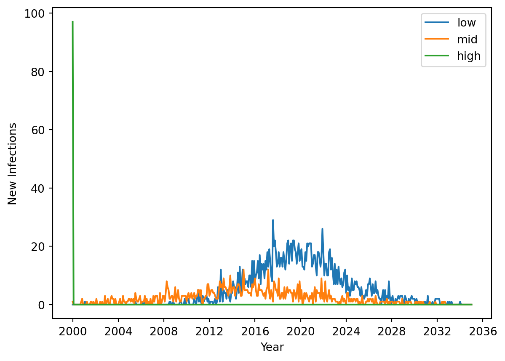

This guide provides technical reference for implementing and customizing networks in Starsim. For learning-oriented examples, see the Networks tutorial.
Transmission routes and the Route base class
All disease transmission in Starsim occurs via routes - pathways through which infectious agents can spread. Both contact networks and mixing pools inherit from the base ss.Route class, which defines the interface for transmission mechanisms.
Route hierarchy
ss.Route (base class for all transmission pathways)
├── ss.Network (contact-based transmission)
│ └── ss.DynamicNetwork (time-varying connections)
│ └── ss.SexualNetwork (sexual partnership networks)
└── ss.MixingPool (group-based transmission)
When diseases calculate transmission, they iterate through all routes in the simulation and call each route’s transmission methods. This unified interface allows diseases to work seamlessly with any combination of networks and mixing pools.
How transmission works via routes
Disease calls route: Each disease loops through sim.networks (which contains all routes)
Route calculates transmission: Each route computes new infections based on its transmission model
Route returns new cases: UIDs of newly infected agents are returned to the disease
Disease processes infections: The disease handles state changes and prognoses for new cases
This separation allows you to mix and match different transmission mechanisms in a single simulation.
Network architecture overview
Contact networks inherit from ss.Network and manage collections of edges (connections between agents). All networks must implement methods for creating, updating, and removing connections between agents.
Key network components:
Edges: The fundamental unit - connections between two agents with transmission parameters
Parameters: Network-specific settings that control connection behavior
State management: Tracking which agents can form connections
Update methods: Logic for adding/removing connections over time
Comparison of networks
Starsim provides different network types for different transmission scenarios:
Let’s compare a simple SIR model configured with transmission using a single Mixing Pool to a similar model using a contact network. Mixing pools are not the same as contact networks, so the results are not expected to be identical.
import starsim as ss# Transmission using a mixing poolmp = ss.MixingPool(beta=1.0, n_contacts=ss.poisson(lam=3)) # A single mixing poolsir = ss.SIR()sim1 = ss.Sim(diseases=sir, networks=mp, verbose=0, label='Mixing Pool')# Transmission using a networknet = ss.RandomNet(n_contacts=ss.poisson(lam=3))sir = ss.SIR()sim2 = ss.Sim(diseases=sir, networks=net, verbose=0, label='Contact Network')msim = ss.MultiSim([sim1, sim2]).run()msim.plot()
Exception ignored in: <_io.BytesIO object at 0x7f4a56d3fe70>
Traceback (most recent call last):
File "/home/runner/work/starsim/starsim/starsim/time.py", line 336, in to_year
year_start = pd.Timestamp(year=self.year,month=1,day=1).timestamp()
BufferError: Existing exports of data: object cannot be re-sized
Figure(768x576)
Each MixingPool has several configuration parameters, including src and dst. The value of these parameters can either be an array of uids, like ss.uids([0,1,2]) or a callable function that takes sim as an argument and returns an array of uids (or a BoolArr) like lambda sim: sim.people.age<10. One helper class we have created is called AgeGroup, which takes low and high ages as parameters. This class has some performance advantages when using multiple pools via MixingPools through caching.
While mixing pools do not represent individual agent-to-agent connections, each agent does have an “effective” number of contacts, typically drawn from a Poisson distribution. Individuals retain their number of contacts within each pool for the duration of the simulation. Effective contacts are used on the acquisition sides. On the transmission side, the “average” infection level, called trans, against which susceptible agents are challenged is computed as:
trans = np.mean(disease.infectious[self.src_uids] * disease.rel_trans[self.src_uids])
And on the acquisition side, each susceptible agent can be thought of as connected to eff_contacts average infectious agents, computed as:
Ultimately, the acquisition probability for each susceptible agent in dst_uids is computed as
p =self.pars.beta * trans * acq
You can see the beta parameter here, which is another pool parameter and should use ss.timeprob() to automatically adjust for time units. Mixing pools do not currently use the beta parameters configured in individual disease modules.
mp = ss.MixingPool( diseases ='sir', # Use this pool only for SIR, not other diseases (HIV in this example) src =lambda sim: sim.people.age <15, # Infection sources will be agents under age 15 dst = ss.AgeGroup(low=15, high=None), # Here demonstrating the AgeGroup class, identical to lambda sim: sim.people.age >= 15 n_contacts = ss.poisson(lam=5), # Contacts will be poisson distributed with a mean of 5)sim = ss.Sim(diseases=['sir', 'sis'], networks=mp) # Two diseases, but only "sir" will have transmissionsim.run()sim.plot()
MixingPools (plural) allows you to configure multiple individual MixingPool pools. This first example shows how to do age mixing. Like MixingPool, MixingPools also takes src and dst, however each of these parameters must be a dictionary with key specifying the name of each group and value as in the singlular mixing pool proving the uids by a callable function or list of uids.
import numpy as npimport sciris as scimport matplotlib.pyplot as pltbin_size =5lows = np.arange(0, 80, bin_size)highs = sc.cat(lows[1:], 100)groups = ss.ndict([ss.AgeGroup(low=low, high=high) for low, high inzip(lows, highs)])n_groups =len(groups)# Let's create a random contact matrix. If using contact matrices from Prem et al., put data here.cm = np.random.random((n_groups, n_groups)) +3*np.diag(np.random.rand(n_groups))print('The first axis (rows) of the contact matrix is the SOURCE group')print('The second axis (columns) of the contact matrix is the DESTINATION group')plt.imshow(cm)mps = ss.MixingPools( n_contacts = cm, src = groups, dst = groups,)# Track new infections by age using an Analyzer, you'll learn about these in a subsequent tutorialclass InfectionsByAge(ss.Analyzer):def__init__(self, bins, **kwargs):super().__init__()self.bins = binsself.update_pars(**kwargs)def init_post(self):super().init_post()self.new_cases = np.zeros((len(self), len(self.bins)-1))def step(self): new_inf =self.sim.diseases.sir.ti_infected ==self.tiifnot new_inf.any(): returnself.new_cases[self.ti, :] = np.histogram(self.sim.people.age[new_inf], bins=self.bins)[0]def plot(self): fig, ax = plt.subplots() ax.set_prop_cycle('color', plt.cm.nipy_spectral(np.linspace(0, 1, len(self.bins))))for i, (b1, b2) inenumerate(zip(self.bins[:-1], self.bins[1:])): ax.plot(self.timevec, self.new_cases[:,i], label=f'Age {b1}-{b2}') ax.legend(); ax.set_xlabel('Year'); ax.set_ylabel('New Infections')az = InfectionsByAge(np.concatenate([lows, [1000]]))sir = ss.SIR()sim = ss.Sim(diseases=sir, networks=mps, analyzers=az, dur=5, dt=1/4, n_agents=1000, verbose=0)sim.run()sim.analyzers[0].plot()print('↑ The default age distribution is uniform, so the 75+ group contains many more people than the other age groups, explaining the larger number of new infections.')
The first axis (rows) of the contact matrix is the SOURCE group
The second axis (columns) of the contact matrix is the DESTINATION group
↑ The default age distribution is uniform, so the 75+ group contains many more people than the other age groups, explaining the larger number of new infections.
Mixing pools work well with properties other than age. Here’s an example that mixes by socio-economic status (SES).
# Define SES statesses = sc.objdict(low=0, mid=1, high=2)# Create 5,000 people adding 50% LOW, 30% MID, and 20% HIGH SESses_arr = ss.FloatArr('ses', default=ss.choice(a=ses.values(), p=[0.5, 0.3, 0.2]))ppl = ss.People(n_agents=5_000, extra_states=ses_arr)# Create the mixing pools, note that the contact matrix need not be symmetricmps = ss.MixingPools( src = {k: lambda sim, s=v: ss.uids(sim.people.ses == s) for k,v in ses.items()}, dst = {k: lambda sim, s=v: ss.uids(sim.people.ses == s) for k,v in ses.items()[:-1]}, # People in the HIGH group have no route to acquire new infections, for demonstration purposes here# src on rows (1st dimension), dst on cols (2nd dimension) n_contacts = np.array([ [2.50, 0.00], # low→low, low→mid [0.05, 1.75], # mid→low, mid→mid [0.00, 0.15], # high→low, high→mid ]),)# Create an analyzer to track results by SES groupclass New_Infections_By_SES(ss.Analyzer):def init_results(self):super().init_results()self.new_cases = np.zeros((len(self), len(ses)))def step(self): new_inf =self.sim.diseases.sir.ti_infected ==self.tiifnot new_inf.any():returnfor value in ses.values():self.new_cases[self.ti, value] = np.count_nonzero(new_inf & (self.sim.people.ses==value))az = New_Infections_By_SES()def seeding(self, sim, uids): p = np.zeros(len(uids)) high_ses = ss.uids(sim.people.ses == ses.high) p[high_ses] =0.1# Seed infections into 10% of SES HIGHreturn psir = ss.SIR(init_prev = ss.bernoulli(p=seeding), beta=ss.peryear(0.2)) # The probability of being selected as a seed is determined on a per-agent basis by the above 'seeding' functionsim = ss.Sim(people=ppl, diseases=sir, networks=mps, analyzers=az, dt=1/12, dur=35, verbose=0)sim.run()fig, ax = plt.subplots()new_cases = sim.analyzers[0].new_casesfor key,value in ses.items(): ax.plot(sim.results.timevec, new_cases[:,value], label=key)ax.legend()ax.set_xlabel('Year')ax.set_ylabel('New Infections')plt.show()

In the above figure, infections are seeded into the high group at the beginning of the simulation, explaining the spike in new cases at that time. High SES can only infect mid SES, so the mid (orange) wave follows. Low SES can only become infected by mid SES in this example, so the blue wave follows. This example intentionally demonstrates the directional nature of mixing pools and includes strong mixing within groups and bottlenecks between groups to make the point.